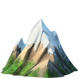

I'm Sonalika
a Web Designer

a Web Designer

I am currently an undergraduate student from IIT. I am a begginner learner and coder and soon will become a great developer and pro coder.

I started learning coding and Web Development when I entered in college after clearing JEE Advance. I love to do coding and all stuff. I also want to make my own games which everyone will like to play .

Painting is my favourite hobby to do in my free time. I like to make sketch of different faces. I like to make designs and then colouring them . I can draw scenery as well as animals painting.I can also make crafts from waste like pen holder & pots from waste bottles.
Show your talents of making Art and Craft and send me those pictures by Email.